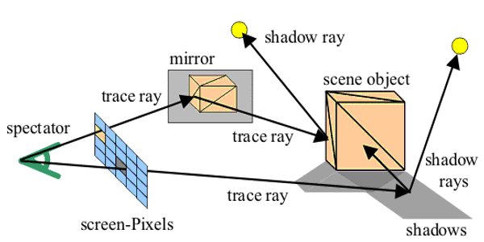
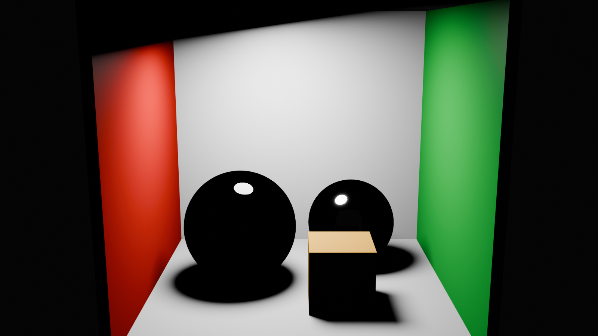
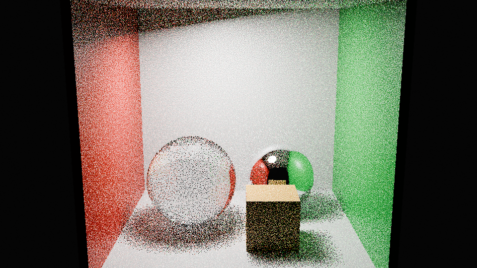
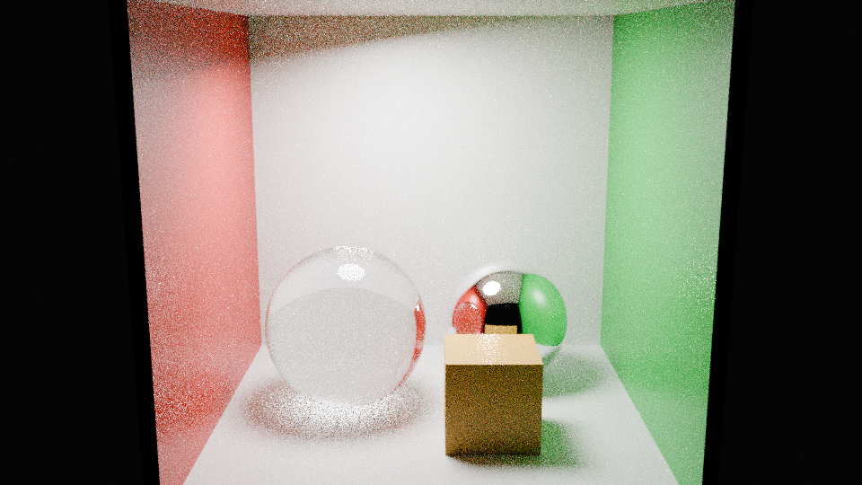
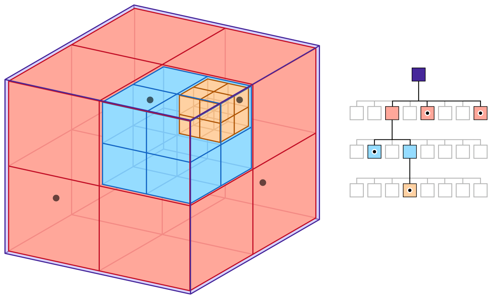
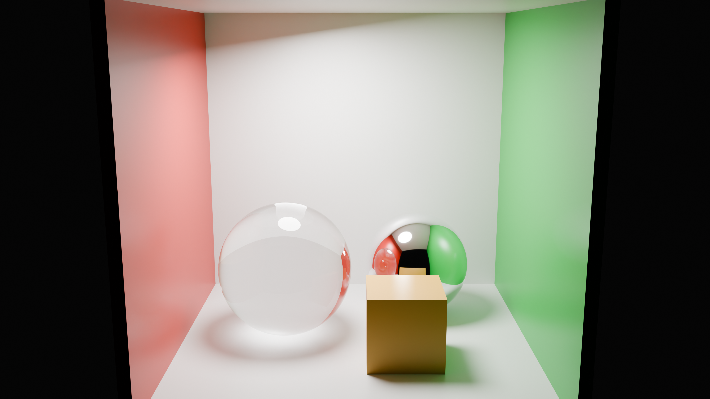

1 / 45
Světlo a sledování paprsku
- Světlo a materiál: rozdělení dopadající energie do směrů.
- Paprsky a viditelnost: průsečíky se scénou a stínové testy.
- Odraz, lom a nepřímé osvětlení: další cesty světla mezi povrchy.
BI-PGA
1 / 45
2 / 45
3 / 45
4 / 45
5 / 45
| Veličina / English | Značka a definice | Jednotka | Význam |
|---|---|---|---|
| Zářivá energieRadiant energy | J | Celková energie záření. | |
| Zářivý tokRadiant flux / radiant power | W = J/s | Energie přenesená za jednotku času. | |
| ZářivostRadiant intensity | W/sr | Výkon bodového zdroje do jednotkového prostorového úhlu. | |
| OzářeníIrradiance | W/m² | Dopadající výkon na jednotku skutečné plochy. | |
| Měrná zář (radiance)Radiance | W/(m²·sr) | Výkon na jednotku promítnuté plochy a prostorového úhlu. |
6 / 45
E ve středu desky
Deska má rozměry 2,5 × 2,5 m. Barva: 0 až 25 W/m², vyšší hodnoty mají stejnou nejsvětlejší barvu. Výpis uvádí nezkrácené hodnoty. Tok na desce je numerický součet E·dA.
7 / 45
Stejný svazek směrů o prostorovém úhlu Ω přenáší stále stejný výkon. Na kouli o poloměru r zabírá plochu A=r²Ω, takže se výkon rozdělí na plochu rostoucí jako r². Při dvojnásobné vzdálenosti je plocha čtyřnásobná a ozáření čtvrtinové. Na nakloněné desce navíc působí projekční kosinus. Platí pro bodový zdroj bez absorpce a překážek. U kolimovaného svazku tento geometrický rozptyl nenastává.
8 / 45
9 / 45
10 / 45
11 / 45
12 / 45
Oranžová: 70 % Lambert + 30 % GGX. Každá křivka má vlastní maximum 1, zde porovnáváme pouze tvar.
13 / 45
Flat shading používá jednu normálu plochy. Gouraudovo stínování počítá barvu ve vrcholech a interpoluje ji. Phongovo stínování interpoluje normály a vyhodnocuje osvětlení ve fragmentu. Phongův osvětlovací model lze použít s různými způsoby stínování.
Stejná koule a kamera, pouze jiná složka výpočtu. Cₐ=c_d=(0,65; 0,30; 0,08), Cₗ=c_s=(1; 1; 1). Barvy se počítají v lineárním RGB. Všechny náhledy mají stejnou pevnou převodní funkci c/(1+c) a sRGB zobrazení, bez automatické expozice.
14 / 45
Blinn–Phong používá poloviční vektor h mezi směrem světla a pohledu. Odlesk váží mocninou n·h místo r·v. Exponenty obou modelů nemají stejnou interpretaci šířky, nelze je bez úpravy zaměnit.
Vektory l, v a r míří od povrchu. n je normála. Zrcadlový člen vrcholí, když je v rovnoběžné s r a osvětlení dopadá na přední stranu.
15 / 45
Řez leží v rovině světla a normály. Všechny čtyři křivky mají společnou radiální stupnici uvedenou v grafu. Oproti 3D náhledu se rozsah této společné stupnice přizpůsobuje největší hodnotě součtu.
Poloměr = relativní skalární odezva v daném směru, všechny barevné faktory mají hodnotu 1. Jednotková šedá polokoule je pouze měřítko. Pro samostatné složky má 3D rozsah 0–1, pro součet 0–3. Měřítko se při změně materiálových konstant nemění. Zrcadlový člen nemá jednotku sr⁻¹.
16 / 45
17 / 45
Definiční rovnice pro danou dvojici směrů
Příspěvek příchozího svazku
Co se stane s příspěvkem při stejném a , když povrch skloníme z 0° na 60°?
Geometrický faktor klesne na polovinu. U obecné BRDF se současně může změnit její hodnota, u Lambertovy zůstane stejná.
18 / 45
| Elevace ε [°] | Krok azimutu Δφ [°] | Počet směrů |
|---|---|---|
| 90 | pól | 1 |
| 75 | 60 | 6 |
| 60 | 30 | 12 |
| 45 | 20 | 18 |
| 30 | 18 | 20 |
| 15 | 15 | 24 |
| Celkem | 81 |
θ měříme od normály; elevace ε = 90° − θ. Každý index představuje dvojici úhlů. V režimu čtyř úhlů lze vybírat i směry mezi 81 vzorky.
Tažením nebo šipkami otáčíte pouze diagram, nikoli směry světla a pozorování.
Index světla i ↓
Index pohledu o →
Model: 0,7 Lambert (ρ=0,6) + 0,3 GGX (α=0,25, F₀=0,04). Syntetická odrazová funkce, nikoli naměřený materiál. Barevná škála je logaritmická a stálá.
19 / 45
20 / 45
Přímé osvětlení bodovým zdrojem a skutečné stínové paprsky. Bez nepřímého světla. Podlaha je šedá Lambertova. Difuzní albedo objektů je (ρ; 0,55ρ; 0,18ρ). Expozice i převod c/(1+c) a sRGB zůstávají stejné. Kliknutím na povrch zobrazíte E, BRDF a odchozí radianci v daném bodě.
21 / 45
Kalibrované měření jednoho směrového vzorku
Referenční Lambertův vzorek za stejných podmínek
22 / 45
Stejné vzorky na kouli a na ploše.
23 / 45
Zachování energie pro každé pevné ωᵢ
24 / 45
Ideálně difuzní BRDF
Integrál promítnuté polokoule
Odražený podíl energie
25 / 45
Zobrazovací rovnice
26 / 45
Co se v tomto příkladu změní, když úhlovou buňku Δ zmenšíme na polovinu?
Oba příspěvky klesnou na polovinu. Hodnota samotné BRDF zůstane stejná.
27 / 45
| Model / reprezentace | Co zachycuje |
|---|---|
| Lambert | Ideální difuzní odraz, ρ/π |
| Phong, Blinn–Phong | Empirický odlesk; normalizaci a energii řeší konkrétní varianta |
| Torrance–Sparrow, Cook–Torrance | Mikrofacety, Fresnel a geometrické zákryty |
| Ward | Také anizotropní odlesk |
| Oren–Nayar | Drsný difuzní povrch |
| Měřená BRDF | Tabulka reálných směrových vzorků, např. MERL nebo ÚTIA |
28 / 45
29 / 45
30 / 45
31 / 45
Který kořen použije kamera a který může označovat výstup ze skla?
Kamera použije nejmenší platný kladný kořen, tedy t=4. Druhý kořen t=6 leží na odvrácené straně koule.
Navazující úloha: Změň d na (0,0,−2). Parametry budou 2 a 3, ale vzdálenost prvního zásahu zůstane 4 m.
Model se načte při zobrazení dílny.
32 / 45
33 / 45
Proč test se samým t>0 dává chybný stín?
shadowRay = Ray(p + offset, normalize(light - p))
blocked = anyHit(shadowRay, tMin, distance(light, p) - tolerance)Bez horní meze přijme i překážku za zdrojem. Any-hit pak odpovídá na jinou otázku, než potřebujeme.
Model se načte při zobrazení dílny.
34 / 45
35 / 45
Stačí při výstupu ze skla prohodit dvě čísla v refrakci a pokračovat bez dalšího testu?
Nestačí. Při 50° pro sklo/vzduch lomený paprsek vůbec neexistuje. Energie ideálního rozhraní zůstává v odrazu.
Model se načte při zobrazení dílny.
36 / 45

37 / 45
Lokální příspěvek + vážené výsledky odražené a lomené větve
Lokální příspěvek zahrnuje emisi a přímé osvětlení po testech viditelnosti, například z Phongova modelu. U difuzního materiálu bez ideální odrazivé a transmisní složky dál nerekurzujeme. Na hloubce D také počítáme lokální člen, ale další větve už nevysíláme. Váhy zahrnují materiálovou odezvu. Při fyzikálním transportu radiance lomem patří do transmisní váhy i faktor indexů lomu, nikoli jen 1−F. Plošné světlo vzorkujeme více stínovými paprsky: částečná viditelnost vytváří měkký stín, nikoli difuzní nepřímé osvětlení.
38 / 45
Která metoda může přenést červenou barvu stěny na neutrální povrch?
Obecný difuzní přenos zvládne path tracing. Černé ideální zrcadlo v přímé variantě je očekávané omezení, ne změna geometrie.
Model se načte při zobrazení dílny.
39 / 45
40 / 45

Které rozdíly lze připsat nepřímému transportu a které nemožnosti pokračovat sklem?
Barevný přenos je příspěvek nepřímých cest. Ztmavlé sklo při nulovém počtu odrazů současně ukazuje přerušenou transmisní cestu.
41 / 45


Kolikrát více vzorků potřebujeme pro zhruba poloviční typickou chybu?
Přibližně čtyřikrát více. Z desetinásobku vzorků nevznikne automaticky desetkrát čistší obraz.
42 / 45

43 / 45
Může menší počet testů změnit polohu správného zásahu?
Korektní akcelerace mění cenu výpočtu, nikoli výsledek nejbližšího zásahu. Neefektivní BVH může mít mnoho testů obalů a přesto správný obraz.
Model se načte při zobrazení dílny.
44 / 45

45 / 45
PBRT, 4. vydání · Radiometrie · Blender: normal map a Non-Color.
Zdrojový Blender skript · Světelná scéna .blend · Displacement scéna .blend.
Blender 4.5: světelné cesty · PBRT: Monte Carlo a chyba odhadu · Blender: normal map a barevná interpretace.